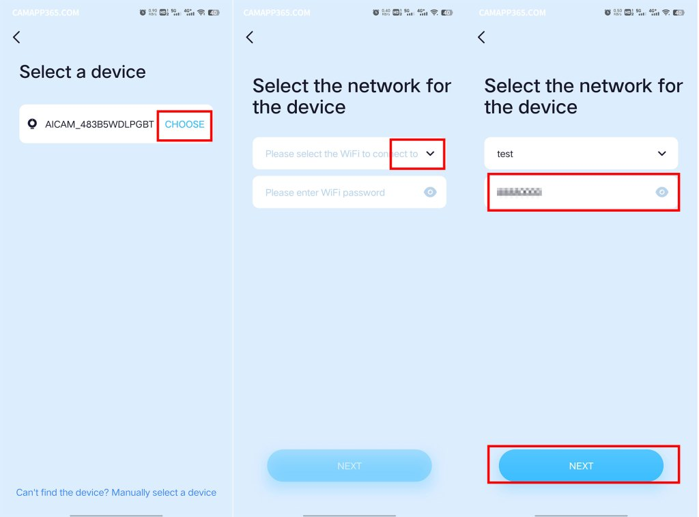
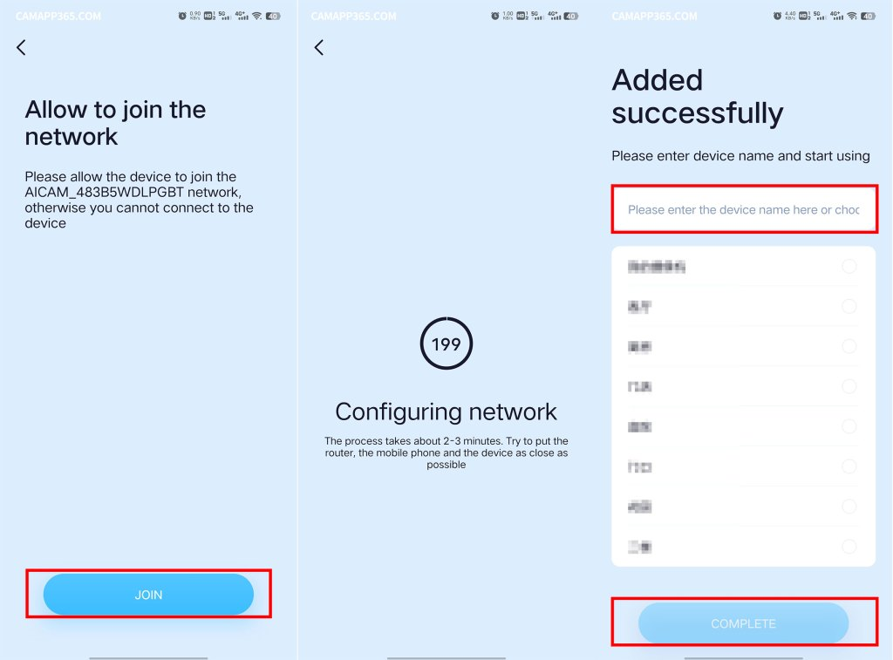

iCam365 踩坑实录：这五个地方我栽过
从配网到日常使用，iCam365 摄像头看着简单但藏着几个容易忽略的细节坑。本文把我踩过的五个真实故障拆开讲透，附一条速查清单帮你避过同样的弯路。
说实话，iCam365官网这套东西我前后折腾了三台摄像头——客厅一台看娃，车库一台看车，还有一台装在阳台看家。每一台配完网都以为终于省心了，结果没过几天就出状况。不是离线就是转圈，要不就是明明换了密码死活连不上。我第一次遇到时以为要重装，甚至怀疑是不是买到了翻新机。后来翻遍了iCam365文档里的故障排查才发现，这些坑几乎都是同一个根因：有些细节真的没注意到。
下面把我踩过的五个最典型的坑按出现频率排个序，每个都讲清楚当时是什么症状、为什么会这样、以及最后怎么解决的。
坑一：扫码配网死活扫不上
症状：App 显示一个彩色二维码，摄像头对着屏幕看了五分钟，就是没反应。反复调整角度、调亮度、擦屏幕都没用，摄像头跟瞎了一样。
原因：扫码配网对环境要求比你想象中苛刻。iCam365 的摄像头内置相机分辨率不高，光线太暗不行，太亮有反光也不行，手机屏幕亮度不够更是直接废。我当时晚上在客厅配网，只开了一盏小台灯，屏幕亮度只调到了 70%，摄像头根本识别不出来。而且摄像头和屏幕的距离必须卡在 10~30 厘米，远一点近一点都容易失败。
解法：先从官方下载装好 App，放弃扫码方式，改用 AP 热点模式。摄像头启动后会广播一个叫 AICAM_xxxxxx 的热点，你手动切过去连，App 会自动把家里 Wi-Fi 的密码发给摄像头。我换了这个方式之后，从打开 App 到配网成功总共用了不到两分钟。说真的，iCam365 推荐 AP 热点模式不是没道理的，成功率差了好一个量级。

坑二：Wi-Fi 密码里加了表情和符号
症状：配网流程走完了，语音提示依次播到了"请等待互联网连接中"，然后就卡住不动了。等了十分钟还是那句，App 里设备一直显示离线。
原因：摄像头的固件解析不了 Wi-Fi 密码里的特殊字符。我家路由器密码之前为了安全，加了一个 # 号和一个 & 符号，iCam365 摄像头连这个密码直接懵了。查了文档才知道，不止 # 和 &，中文、空格、表情符号统统不行。摄像头拿到密码字符串之后解析失败，根本没真正连上网，但它自己不会告诉你，就是卡在那等。
解法：配网的时候临时把路由器密码改成纯数字和字母的组合，比如 Home2026，先把摄像头配好。之后你想改回复杂密码也可以，但改的时候要在 App 的设备设置里同步更新 Wi-Fi 密码。我当时就先临时换了简单密码，配好之后路由器改回复杂密码，App 里跟着改，两边一致就没问题了。

坑三：双频合一的 SSID 让摄像头反复掉线
症状：摄像头第一天配好一切正常，第二天早上起来看，离线了。手动断电重启恢复正常，第三天又离线。路由器后台一看，摄像头一会儿在设备列表里一会儿消失，像在跟别的设备抢 IP。
原因：我家路由器开了双频合一，2.4G 和 5G 用同一个 SSID。iCam365 摄像头只能连 2.4GHz 频段，它识别不了同一个 SSID 背后其实是两个不同的无线频段。路由器有时候把摄像头分到了 5G，它连不上就掉线。更坑的是，有些路由器会强制让 2.4G 和 5G 的设备在同一频段间漫游切换，摄像头被切到 5G 之后就再也回不来了。
解法：把路由器的 2.4G 和 5G 频段拆成两个独立的 SSID。比如原来叫 Home-WiFi 的，拆成 Home-WiFi 和 Home-WiFi-5G。然后在 App 里给摄像头指定那个不带 -5G 的 SSID。这个操作之后，我那台之前天天掉线的车库摄像头，现在三个月没离线过。
坑四：换房子后不知道要完整重配网
症状：从租的房子搬到新房，路由器换了、Wi-Fi 名也换了。摄像头搬过去接上电源，App 里直接离线。我以为跟之前改密码一样，在 App 设置里改个 SSID 就行，结果改了十次还是离线。
原因：换房子是完全不同的场景，不能走"改 Wi-Fi 密码"的捷径。摄像头里存的是旧家的 SSID 和密码，新家是全新的配置，App 里改 Wi-Fi 设置那套只适用于"密码变了、SSID 没变"的情况。你必须让摄像头重新走一遍完整的配网流程，让它从零开始学新家的 Wi-Fi。
解法：App 里点离线设备 → 进设备详情 → 点顶部的"故障排查"按钮，它会引导你重新走 AP 热点配网或扫码配网。如果点故障排查没反应，直接长按 reset 恢复出厂，然后像第一次用那样添加设备。我当时就是先点了故障排查卡住了，后来 reset 重来，才发现原来搬家不能偷懒。

坑五：实时画面一直转圈加载
症状：设备状态显示在线，点进去看实时画面，进度条转了三十秒还出不来，最后超时。换网络、重启手机、重启摄像头都试了，就是不行。
原因：iCam365 的实时预览默认走云端中转，哪怕你和摄像头在同一个 Wi-Fi 下，画面也是先传到云端再回来。所以公网一抖，画面就卡。还有一个次要原因是夜视模式下红外灯开启，摄像头的编码效率会下降，延迟可能到两三秒，有时候看起来像在转圈。另外如果 TF 卡坏了，摄像头主循环可能被卡死，实时画面也会跟着出不来。
解法：先换手机的 4G 网络测试一下，排除是不是家里公网的问题。然后在 App 里找有没有"局域网直连"开关，打开之后手机和摄像头在同一个 Wi-Fi 下就直接连接不走云端了，延迟能降到一秒以内。如果 App 里没有这个选项，说明版本较老，建议检查更新。还不行的话，试试把 TF 卡拔出来再看画面能不能出来——我有一次就是 TF 卡损坏导致的卡画面，格式化之后就好了。
防坑清单
写完这么多，其实核心的坑也就那么几个。给你列一条速查清单，下次遇到问题先对着过一遍：
- 配网首选 AP 热点模式，扫码只在热点模式失败时再试
- Wi-Fi 密码只用数字和字母，不要加特殊字符、中文或空格
- 双频合一必须拆 SSID，给摄像头指定纯 2.4G 的那个
- 换房子、换路由器（新 SSID）= 必须完整重配网，走故障排查流程
- 实时画面转圈先换 4G 测公网，再找局域网直连开关
知道这些坑之后，iCam365 其实相当省心。现在那三台摄像头已经稳定跑了快一年了，除了偶尔换网需要重配，基本没出过其他问题。
相关的资料我同步维护在三个开源仓库里，GitHub 上有完整的文档和示例，如果国内访问慢可以去 Gitee 或 GitCode 找同样的内容。GitHub、Gitee、GitCode，三个仓库路径都是一样的，看哪个顺手用哪个。